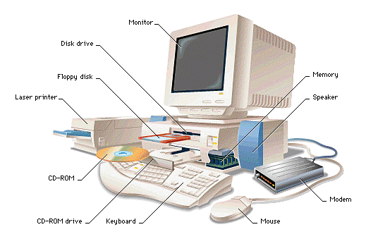

Komputer adalah alat yang dipakai untuk mengolah data menurut prosedur yang telah dirumuskan. Kata computer pada awalnya dipergunakan untuk menggambarkan orang yang perkerjaannya melakukan perhitungan aritmatika, dengan atau tanpa alat bantu, tetapi arti kata ini kemudian dipindahkan kepada mesin itu sendiri.
